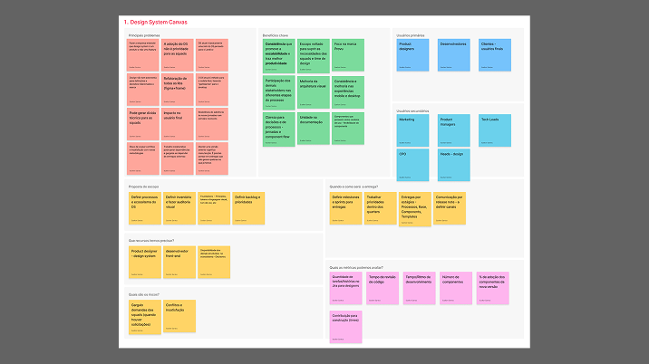
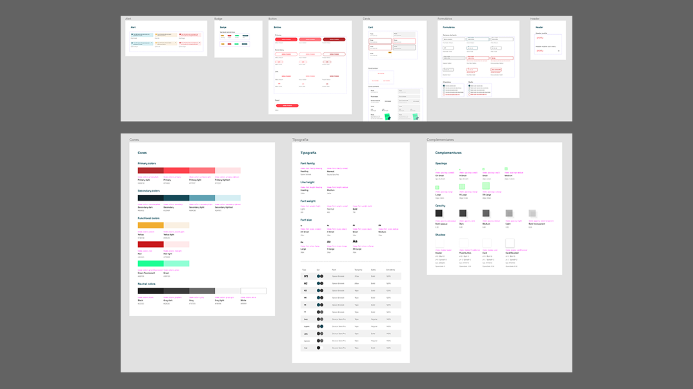
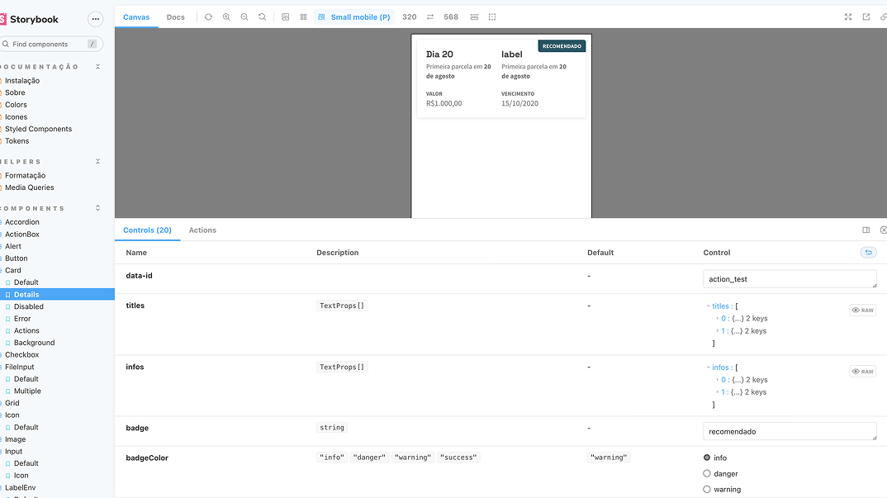

Em 2021, a Lendico, fintech de crédito pessoal, passou por uma mudança radical: rebranding completo e novo nome, Provu. O desafio para o time de design foi imenso: refazer toda a linguagem visual, os design tokens e os componentes do produto em menos de um ano, com o lançamento da marca já agendado para novembro. Eram dois produtos distintos, com times separados, atendidos pelo mesmo DS.
O DS legado carregava a identidade visual da Lendico em cada token. Não havia como reaproveitar: precisávamos construir do zero algo robusto o suficiente para escalar, consistente para unificar dois produtos com times separados, e entregável dentro de um prazo que não movia.
"Uma Supernova é responsável por espalhar pelo Universo elementos que evoluem e se tornam outros corpos celestes. Assim também é a nossa missão: evoluir os produtos do universo Provu."
Conceito por trás do nomeDo entendimento ao handoff.

O resultado foi um Design System completo, com tokens organizados em três camadas (primitivos, semânticos e específicos de componente), componentes documentados com anatomia e casos de uso, e cobertura visual consistente entre os dois produtos da Provu. A nomenclatura do sistema acompanhou o universo temático da marca: squads e ambientes de QA/Sandbox receberam nomes de planetas derivados da Supernova.


Escala, consistência e velocidade.
O que esse projeto me ensinou.
O maior risco do projeto não era técnico: era político. Convencer stakeholders de que o DS deveria ser tratado como produto, com backlog e priorização próprios, foi a batalha mais difícil. A tentação de tratar o rebranding como um projeto de sprint único era real.
Aprendi que a documentação não é entregável secundário: ela é o produto. Um componente sem documentação clara é um componente que será implementado de forma errada ou ignorado. Nesse projeto, a decisão de não lançar nenhum componente sem anatomia e casos de uso documentados foi o que garantiu a adoção real pelos times.